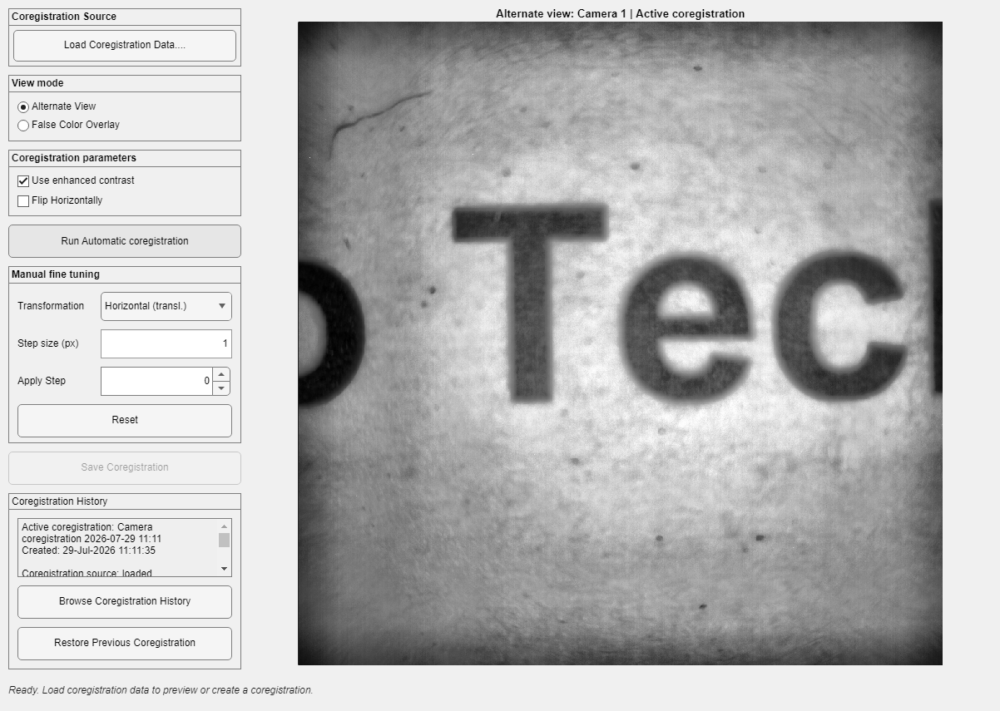

This utility estimates and manages the transform between cameras in a two-camera optical imaging rig.
Choose Utilities > OiS 2-Cam Alignment. The active Save Folder must have AcqInfos.MultiCam=true. DataViewer passes the folder and, when available, rig plus project/subject/session context.

The Save Folder passed by DataViewer is context only. Choose Load Coregistration Data and explicitly select unregistered source data; processed .dat files may already have a transform applied.
| Control | Purpose |
|---|---|
| Load Coregistration Data | Loads camera images from an unregistered source folder. |
| Alternate View / False Color Overlay | Compares cameras without changing data. |
| Use enhanced contrast / Flip Horizontally | Prepares the alignment view. |
| Run Automatic coregistration | Estimates a candidate transform. |
| Transformation / Step size / Apply Step | Fine-tunes translation, rotation, or scale. |
| Save Coregistration | After confirmation, stores the transform as a rig-managed resource when rig context is available and updates local camera coregistration state. |
| Browse Coregistration History | Inspects active and archived rig resources. |
| Restore Previous Coregistration | Restores a historical resource after confirmation rather than overwriting history. |
DataViewer waits for the utility to close and then reports closure. The current displayed data is not automatically rewritten by this utility.
Rig-level resource
Camera coregistration belongs to the rig, not one subject. Verify the physical camera arrangement before making a transform active.